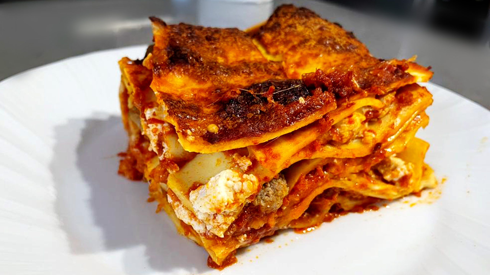

Lasagna

Most Famous Italian dish in the World
One of the oldest and best-known pasta shapes. Layers of lasagna alternating with ragù. In Italy it's called "Dish of Gods".
Ingredients
- 1/2 pound ground pork
- 1/2 pound lean ground beef
- 1/2 cup minced onion
- 1 can crushed tomatoes
- 1 can tomato sauce
- 2 tablespoon fresh parsley
- 1 clove garlic
- 1 1/2 basil
- 1 1/2 teaspoon salt
- 1 1/2 teaspoon dried oregano
- 1 1/2 teaspoon white sugar
- 1 pack lasagna
- 1 pound mozzarella
- 3/4 cup Parmesan cheese
- 3 large eggs
- pepper
Steps
- Combine ground and pork beef, and cook for 7 minutes.
- Stir crushed tomatoes, tomato sauce, parsley, garlic, basil, sald, oregano and sugar. Reduce heat.
- Cook lasagna in boiling water.
- Mix cottage cheese, Parmesan cheese, eggs.
- Assemble lasagna. Two layers of noodles and cover with sauce and add mozzarella.
- Bake in the oven until is ready.
Home